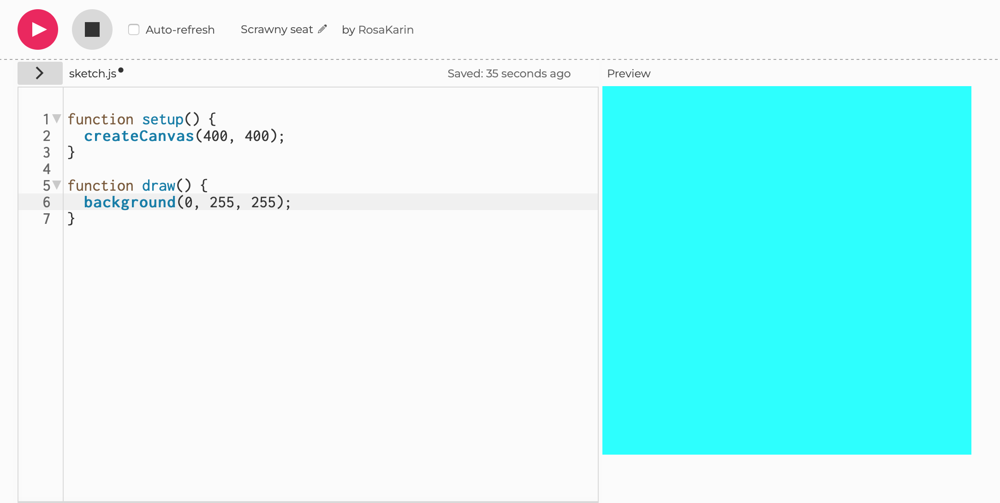
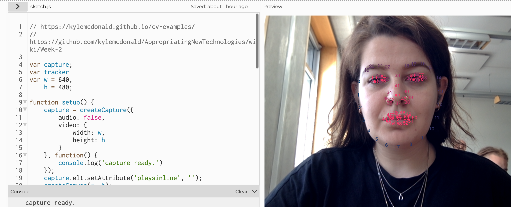
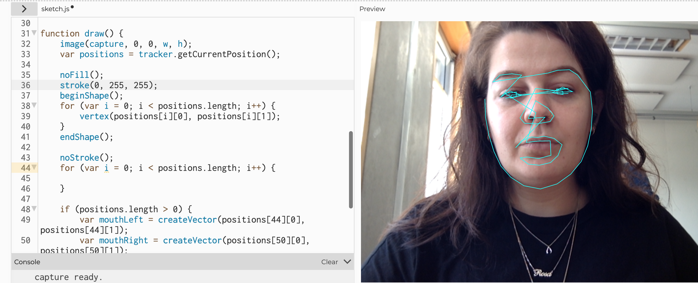
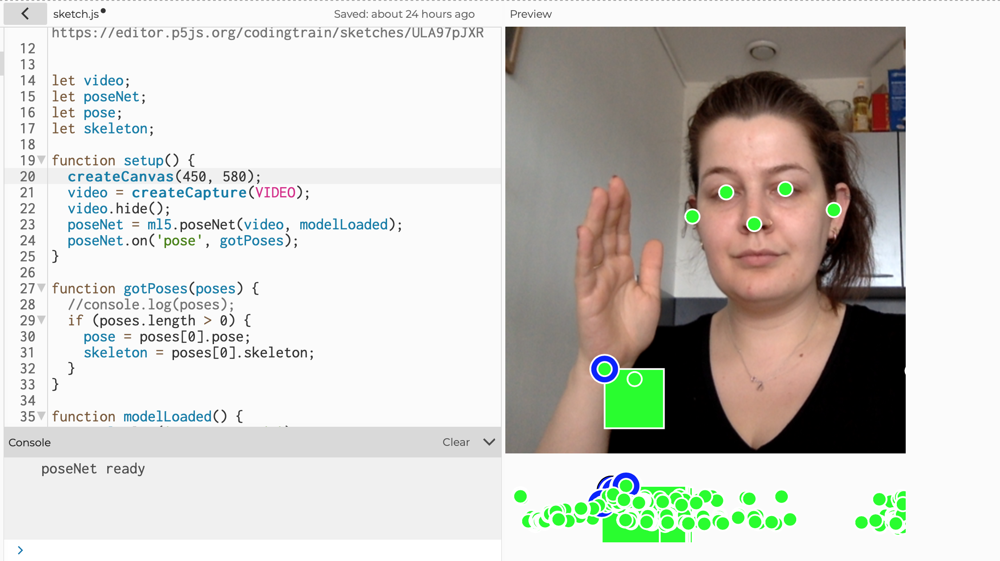
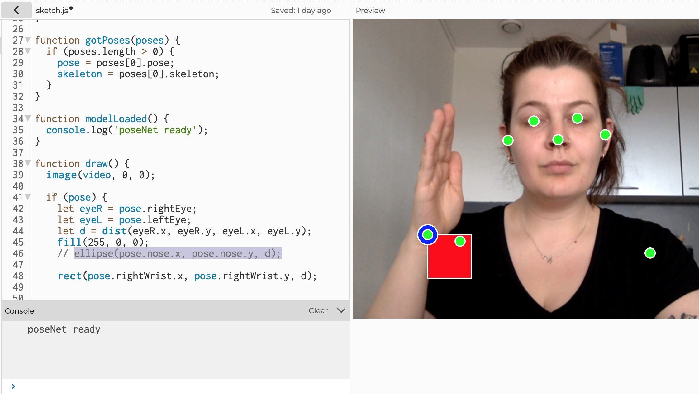
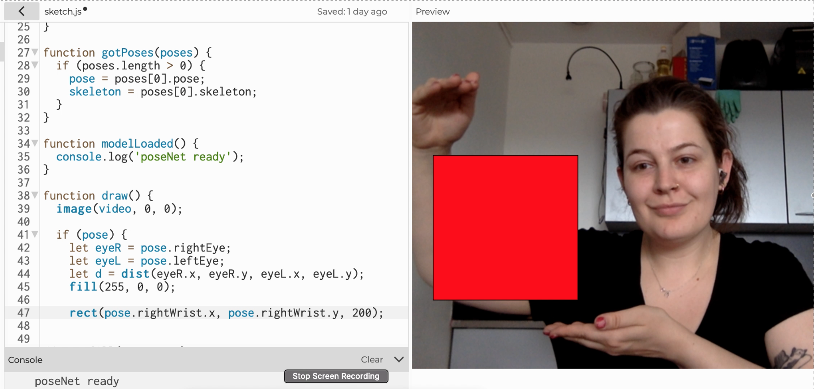
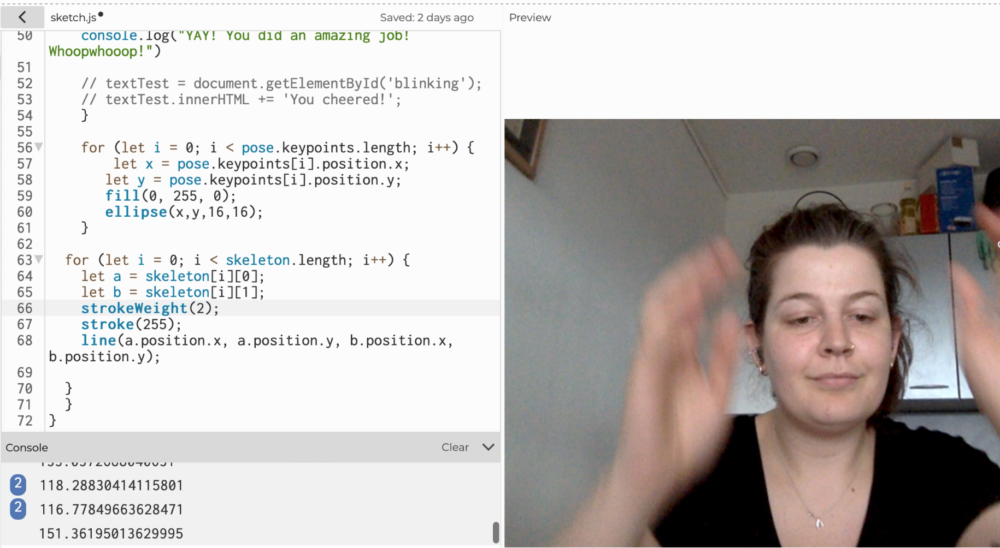
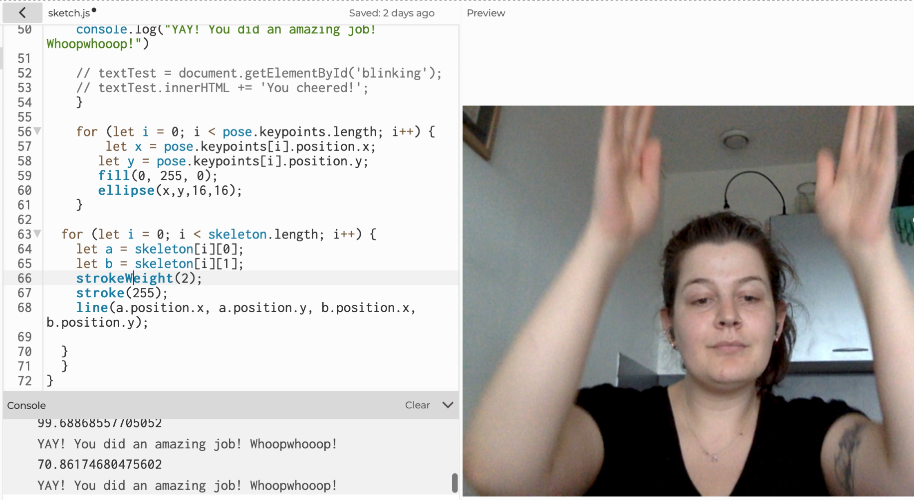

Op deze pagina zijn de opdrachten te vinden welke passend zijn bij de lesstof welke tijdens de workshop Computer Vision zijn behandeld
Opdracht: Voeg kleur toe aan de sketch die je hebt gemaakt in de begin opdracht. Maak een screenshot of opname van het resultaat van je sketch bestand en voeg deze toe aan je portfolio. 
Opdracht: Experimenteer / tinker met wat gegeven voorbeelden. Probeer de code te veranderen en iets anders te maken. Maak een screenshot of opname van het resultaat van je sketch bestand en voeg deze toe aan je portfolio.
 Opdracht: Experimenteer met de wrist keypoints en/of de berekening van de afstand tussen de wrist keypoints. Visualiseer dit in een interessante manier in je sketch.   
Opdracht: Maak een sketch die kan meten of iemand aan het juichen is, aan de hand van de positie van hun handen. Wanneer beide handen een bepaald punt bereiken zal er in de console.log een motiverende tekst verschijnen.  